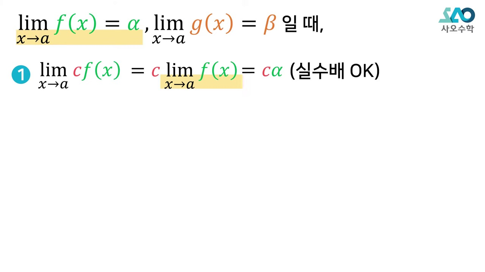
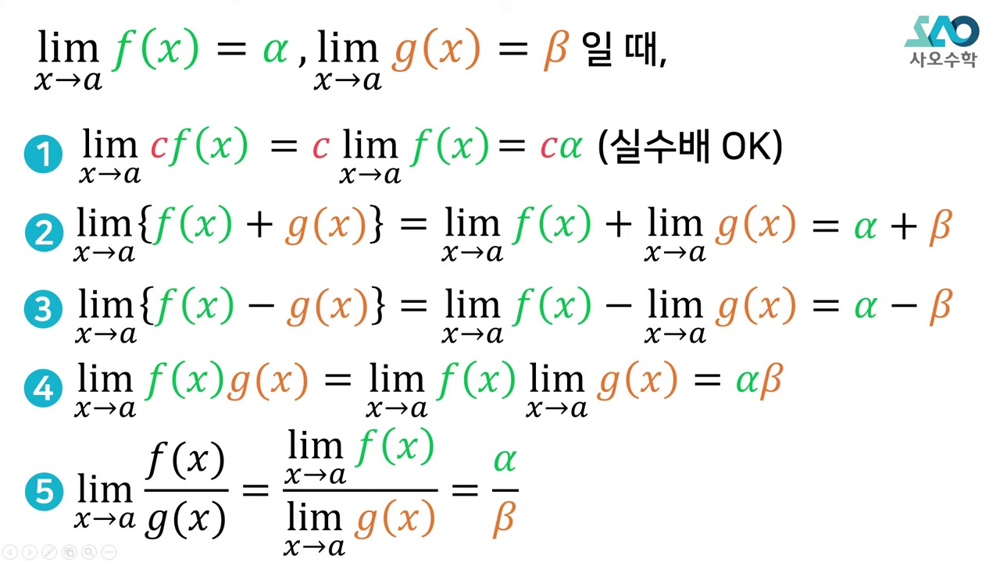
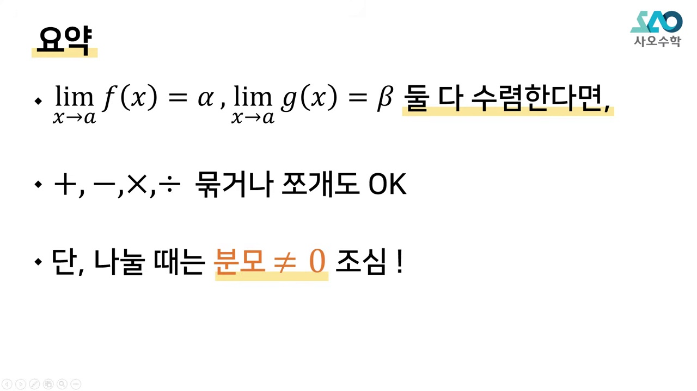
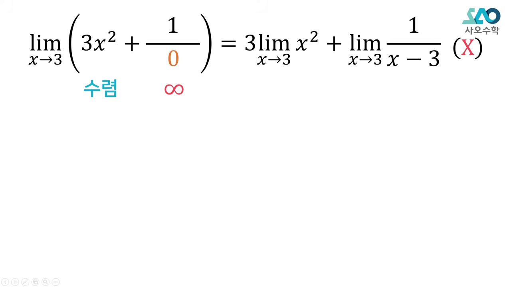
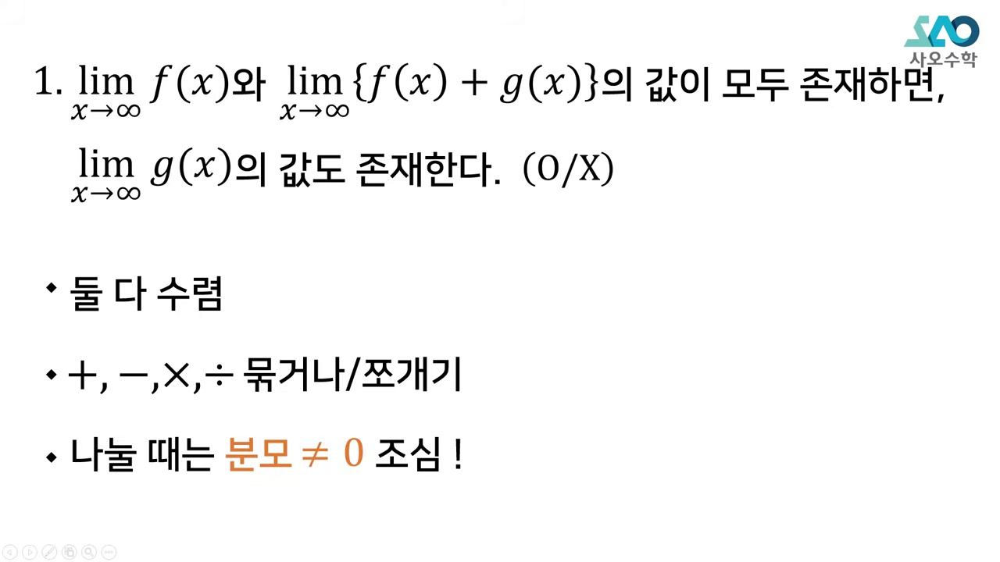
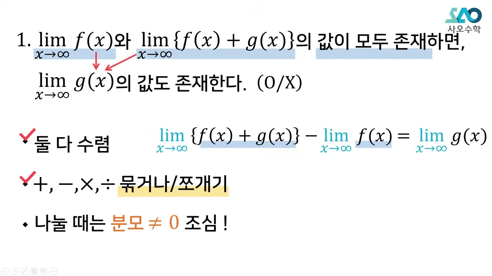
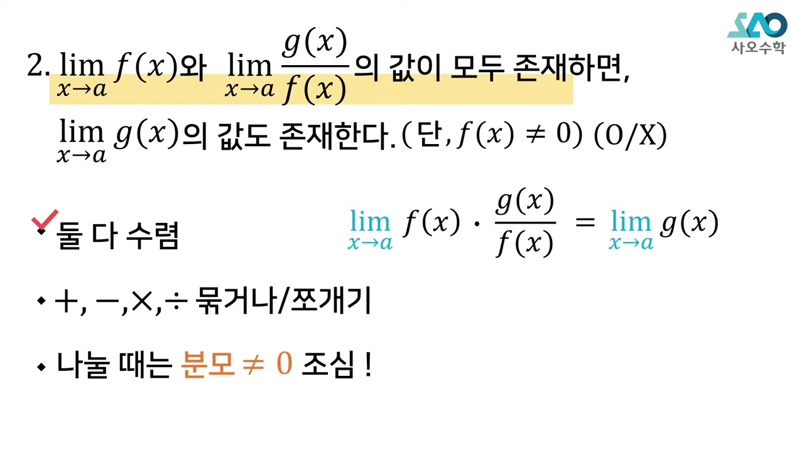
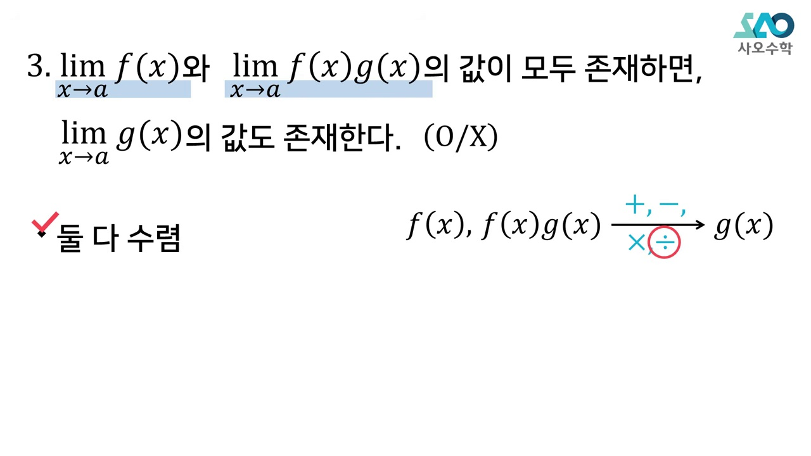
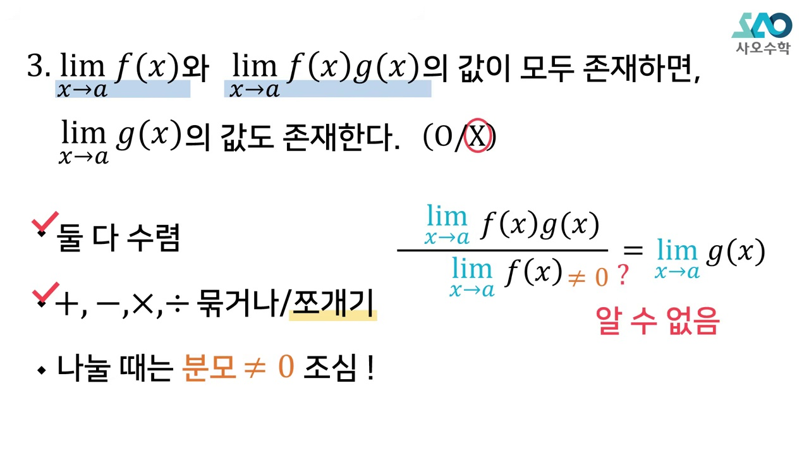

"시험장에서 반례 떠올리려다 시간 날리지 마라!"
합답형(ㄱ, ㄴ, ㄷ) 문제의 참/거짓을 3초 만에 꿰뚫어 보는 단 1가지 필연적 해법:
수렴하는 덩어리를 $h(x)$로 치환하는 법칙 · 사칙연산 분배 가능 조건 · 분모가 0이 되는 치명적 함정 필터링을 동적 진위판정 시뮬레이터로 정복합니다.
시험장에서 반례를 떠올리려다 시간만 낭비하는 기존 학습법의 한계를 지적합니다.

두 함수가 모두 수렴할 때만 사칙연산 기호가 안으로 들어갈 수 있다는 대전제를 확인합니다.

나눗셈에서 분모의 극한값이 0이 될 수 있는 가능성이 존재하는 순간 거짓이 됨을 강조합니다.

수렴한다고 주어진 복잡한 덩어리 식 전체를 하나의 새로운 함수 h(x)로 치환하는 발상을 배웁니다.

g(x) = h(x) - f(x)로 표현되므로 수렴 - 수렴 = 수렴 (참!)임을 명쾌하게 증명합니다.

g(x) = k(x)/f(x)로 분모에 f(x)가 들어가므로 lim f(x)=0일 가능성 때문에 거짓임을 보입니다.

역수를 취하거나 곱할 때 분모의 0 수렴 가능성 유무를 1초 만에 걸러내는 필터링 기법을 배웁니다.

부등식에서 극한을 취할 때 등호가 붙는 원리와 수렴값의 일치 여부를 점검합니다.

수능 평가원 실제 기출문제를 치환법 하나만으로 암산으로 완벽하게 해결합니다.

시험장에서 써먹는 3단계 알고리즘: 치환 -> 표현 -> 분모 점검을 마스터합니다.
1. 교과서 함수의 극한 기본 성질 (사칙연산 법칙)
$$\lim_{x \to a} f(x) = \alpha, \quad \lim_{x \to a} g(x) = \beta \quad (\alpha, \beta \text{는 실수})$$일 때 다음이 성립합니다:
2. 치환법의 절대성 증명
$\lim f(x) = \alpha$, $\lim [f(x)+g(x)] = \gamma$일 때, $f(x)+g(x) = h(x)$라 두면 $\lim h(x) = \gamma$입니다.
우리가 구하고자 하는 함수 $g(x) = h(x) - f(x)$이므로:
$$\lim g(x) = \lim [h(x) - f(x)] = \lim h(x) - \lim f(x) = \gamma - \alpha$$두 수렴하는 함수의 차는 항상 수렴하므로 명제는 100% 참이 됩니다!
__MANIM_CODE_29__